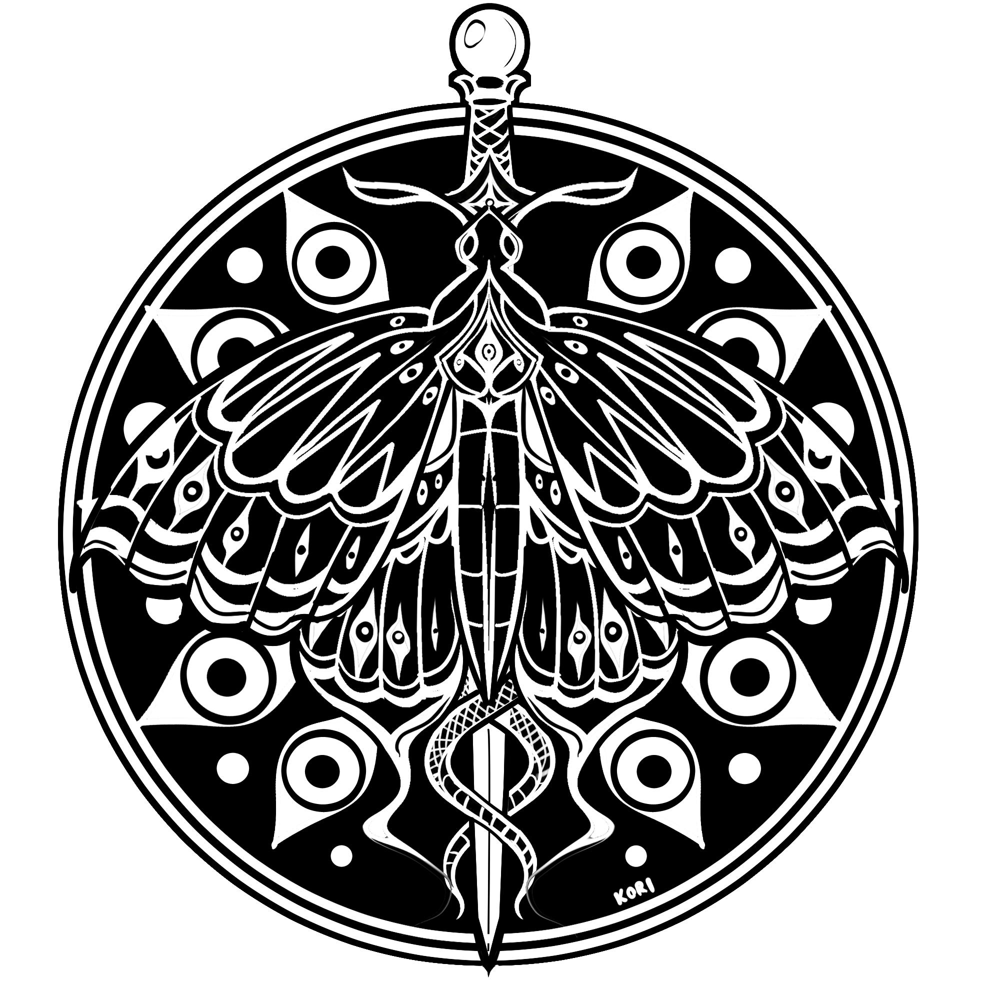

Negation & compounds
vai (separate) negates a statement; vai- (attached) forms a word meaning lacking or without something. Do not attach it indiscriminately.
Tumu vai xce bali. You are not a sacrifice.
vai-drishti blind / no-sight

Search the lexicon or make a literal bidirectional translation between English and Xrou-Haxa. Unknown words stay visibly marked instead of being invented.
Browse and copy common expressions for everyday Astralith roleplay. You can also try any example directly in the translator. These are curated or newly proposed Xrou expressions; some alternate readings depend on context.
Use these structures to build original Xrou sentences. Words in [brackets] are placeholders, not automatic translations. The examples below demonstrate each pattern, but not every combination will be grammatically valid.
These rules make new sentences possible without inventing a translation for every combination. Existing canon and fixed phrases always take precedence. Regular noun -ys is proposed, not yet formally attested for every noun.
vai (separate) negates a statement; vai- (attached) forms a word meaning lacking or without something. Do not attach it indiscriminately.
Use adam- for “my” before a noun; use da-tumu before a noun for “your.” dar-adam means “mine.” da- also forms “of” relationships.
Add -ys to an ordinary count noun. The translator recognizes the resulting plural when the singular appears in the dictionary. Some established words already have collective/plural meanings, such as puxa.
Verbs generally keep one base form across persons. Put thanatei before a verb for the future, or xanathes for a past event. English input recognizes many simple “-s” and past “-ed” forms.
shakta means can / able; vai shakta means cannot. The adjective vai-shakta means incapable or unable.
da is the proposed stand-alone word for a beneficiary or purpose (“for”); da- is the existing relational prefix (“of,” “from,” etc.). Before a pronoun, use forms like da-tumu (“for you”) and da-adam (“for me”). For direction toward a place, use prati (“to/toward”).
Use antar (in), upari (on/above), adhas (under), saha (with), vai-saha (without), antara-madhye (between), and vishaya-da (about). The standalone prefix vai- still forms negative compounds.
uta (and), athva (or), lekin (but), kyunki (because), idias (if), idias-vai (unless), kintu (although), and yatha-uddesha (so that). These are working defaults, not automatic substitutes in every idiom.
English to before a verb (“want to go”) is an infinitive marker, not the destination word prati. Since can mean “because” (kyunki) or “from then onward” (tada-prabhriti). For also has different uses for duration, purpose, and recipients. Full phrases are the most reliable when meanings overlap.
Questions, gender/number agreement, idioms, unusual verb tenses, and possessive meanings beyond “my/your” are not fully standardized. The translator shows known matches and leaves unknown material marked rather than pretending certainty.